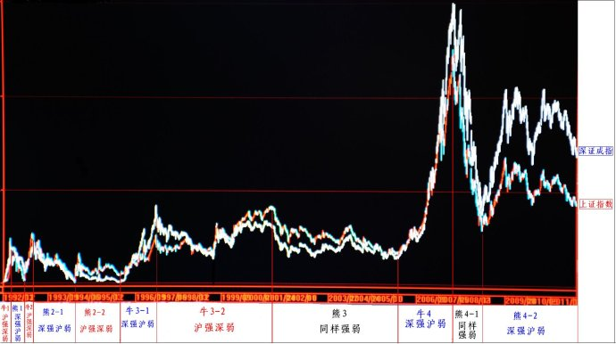

第83篇•教你炒股系列9：股市炒作主线是次新股和低价股（2）
谷为陵
我们谈谈沪深股市是怎样热炒次新股和低价股市场的。所谓热炒次新股市场，主要是指市场对于次新股市场有强烈的炒作欲望，主要体现在这几年来中小板市场的独立超强走势。所谓热炒低价股市场，是指在每一轮牛市中涨幅最大的市场，往往是算数平均股价最低的市场，或者是在上一轮牛市中涨幅最小的市场。
沪深股市热炒低价股市场有两种主要表现：一是在市场轮动方面，体现为上证指数与深证成指的轮炒；二是在炒作低价市场方面，体现为B股市场的超强走势。现分别阐述如下：
1、上证指数与深证成指的轮炒
自沪深股市分别于1990年底和1991年4月开设以来，沪市和深市就形成了多次轮炒的局面，出现了所谓的“沪强深弱”以及“深强沪弱”的现象。在2009年之前，沪深股市的轮炒具有极其明显的规律。这个规律就是，在每一轮牛市中涨幅最大的市场，往往是上一轮牛市中涨幅最小的市场，体现为风水轮流转。
20年来，沪深A股总计出现了4轮大牛市，1990年底至2011年12月上证指数与深证成指的周K线叠加图如下所示：

（1）第1轮牛市(图中“牛1”)：沪强深弱
自1990年底至1992年5月底，上证指数涨幅达13倍，而同期深证成指涨幅只有6倍。
（2）第2轮牛市(图中“牛2”)：沪强深弱
自1992年11月至1993年2月，上证指数涨幅达3倍，同期深证成指涨幅只有1.5倍。
（3）第3轮牛市：先是深强沪弱，后为沪强深弱。
第3轮牛市比较特殊，因为该轮牛市程序时间长达5年，是沪深股市持续时间最长的言论牛市。该轮牛市的上涨可划分为两个主要的阶段：第1阶段是自1996年1月至1997年5月，第2阶段是自1999年5月19日至2001年6月。
在第1阶段，上证指数涨幅为2倍，同期深证成指涨幅达5倍，表现为深强沪弱。在第2阶段，上证指数涨幅为1.2倍，同期深证成指涨幅为1倍，表现为沪强深弱。需要解释的是，两者虽然涨幅相差不多，但由于自1997年5月至1999年5月的股市调整期间，上证指数的最大跌幅只有47%，而同期深证成指的最大跌幅却达到了57%，明显弱于沪市。所以，至2001年6月，沪市创出了2245点的历史新高，而深证成指却只达到5091点，离其1997年5月的最高点6103点还相差1000点。
（4）第4轮牛市：深强沪弱。
自1995年7月至1997年10月，上证指数涨幅为5倍，同期深证成指涨幅达6.6倍。2008年底以来，沪深股市也是呈现深强沪弱的特征。
特别需要指出的是，自1991年以来，沪深股市只出现过两次一个市场连续在两轮上涨行情中走强，第一次是上证指数在上图中的“牛1”和“牛2”连续走强，第二次是深证成指在上图中的“牛4”和“熊4-2”连续走强。至今还没有出现过一个市场连续在三次上涨行情中走强。既然深证成指已经在最近的两次上涨行情中连续走强，按照沪深股市轮炒的规律，这是否预示着下一轮牛市应该出现沪强深弱的现象呢？
2、B股的超强走势
B股市场股票的算数平均股价一直低于这些股票在A股市场的算数平均股价。自2000年B股市场向国内投资者开放后，在沪深股市的每一轮较大的上涨行情中，B股市场的涨幅几乎都要大于同期A股市场。
以下是1996年底至2011年12月上证指数与上证B指的周K线叠加图：
（1）第1次上涨行情：自1999年5月至2001年6月
上海B指涨幅10倍，上证指数涨幅1倍；深圳B指涨幅10倍，深证成指涨幅1倍。
（2）第2次上涨行情：自2005年7月至2007年10月
上海B指涨幅6.8倍，上证指数涨幅5倍；深圳B指涨幅3.3倍，深证成指涨幅6.6倍。
（3）第3次上涨行情：自2008年底至2010年11月
上海B指涨幅3.8倍，上证指数最大涨幅1.1倍（2009年7月达最高点）；深圳B指涨幅3.3倍，深证成指最大涨幅1.5倍（2009年12月达最高点）。
以下是2007年10月至2011年12月上证指数、深证成指、上证B指与深圳B指的周K线叠加图：
只在自2005年7月至2007年10月，出现过一次深圳B指涨幅小于沪深A股市场的情况，但在其后的2008年底至2010年11月中，深圳B指涨幅达到3.1倍，远远超过沪深A股市场的同期涨幅，并创出了888.38点的历史新高。
3、中小板市场的超强走势
中小板市场的算数平均股价并不低，自2008年底以来为什么会创出历史新高呢？这只能用市场热衷于炒作炒新股市场来解释。
以下是2007年10月至2011年12月上证指数、深证成指、中小板指数与创业板指数的周K线的叠加图：
结论：根据沪深股市六种指数近几年来的表现，可以发现上证指数和创业板指数是走势最弱的，其中，创业板指数自开盘后就一路下跌。依据沪深股市热炒、轮炒次新股和低价股市场的特征，我们是否可以得到这样的推论：在下一轮牛市中，表现最强的是否会是上证指数和创业板指数呢？
（未完待续）